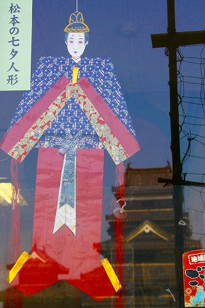

夏である。
七夕である。
七夕といえば皆さん何を思い浮かべましょうぞ。
願い事を書いた短冊を竹や笹に吊るしたり、あるいは仙台のように豪華な七夕飾りを街中に展示したり…。
まあ、大体そんな感じですよね。
ところが長野県の松本市では
一風変わった七夕まつりが行われているのだ。
というわけで行ってみました。松本市に。
松本の七夕まつりは8月に行われる。
七夕行事は中国から伝わったもので、実は
お盆の行事に密接に関係しているのだ。
織姫と彦星が年に一度だけ逢瀬を交わす、というロマンチックな伝説と地獄の釜が開いて死者が湧き出てくるお盆。
一見関係ないように思えるが、
生と死は常に表裏一体なのである。
ホラ、死者供養のための盆踊りは転じてムラの男女が○○する場でしょ。
あ、話が逸れましたね。七夕の話です。
この時期、松本市内を訪れるとあちこちにこんな人形が飾られている。
そう、これが松本の七夕における主役の
七夕人形なのだ。
街中の商店にも。
松本城の売店にも。

まあ、驚くほどあちこちでこの人形に出会うわけなのだ。
つまり松本では七夕に紙でできた人形を縁側などに吊るすのである。
願い事を書いた短冊や巨大な梵天のような飾りなど二の次三の次、まずは人形！なのである。
何よりの証拠がこれ。
どうですか。
松本では
普通に人形を軒先に吊るしているのです。
うわっ！
ク☆ビ☆ツ☆リ！とか誰も言いません。楽しく輪になって遊んでますもの。

そんな七夕の人形を体系的に見学できるのが
松本市立博物館である。
市内の諸々七夕行事を見る前にここで松本の七夕事情を事前学習していこうではないか。
松本の七夕行事に関してはこの市立博物館が多くの人形を蒐集しており、オピニオンリーダー的な役割を果たしている。
博物館のかなり大きなスペースを七夕人形の展示に割いているのだ。
上記のような地口（今で言うオヤジギャグ的な唄）が書かれた折り紙のようなものを吊るすタイプもあるにはあるが、これは超地味な方。
メインはこんなタイプの人形。
折り紙のような人形を軒先に吊るすのが松本独自の七夕行事なのだ。
さらに傍に置かれたこちらの男女。

これはハンガーのようにこの男女の人形に浴衣を掛けて軒先に吊るすタイプ。
肩の両サイドに棒が伸びており、衣文掛けのような形状になっている。
中には頭だけを吊るす地域もあるようで。
さらに場所によってはこのように馬を吊るすところもあるとか。

七夕の供え物。
夏の野菜や果物、隅には茄子の牛も添えられている。
この辺、盆行事と密接な関係がある証拠といえよう。
流しびな形式の人形。これは松本ではなく東筑摩郡や北安曇郡などで使用されていたものだと言う。

毎年川に流してしまうタイプで祓え人形のようなものなのだろう。
人がた形式。紙の着物が何枚も重ねられている。毎年紙を重ねていくのだろうか。だとしたらオシラサマみたい。
この男女一対の紙人形が現在もっとも一般的なスタイル。
男女一対なのは彦星と牽牛を象ったものなのだろう。
異様に平面的なのが妙におかしい。何だかこのまま飛んで行っちゃいそうだね。
これらのロマンチックな人形が並ぶ中で一際異彩を放っていたのがこちらのお方。
アシナガ、というのだそうな。
着物掛け形式、とあるのでこれもまた浴衣を掛けて軒先に吊るすのだろう。
このプロポーションったらっ！
この時点で完全に
ぞっこん状態！
何なんだこの
全ての気負いを毒抜きさせてくれるようなポンチな御姿！
今までのロマンチックな七夕人形のことなどほぼそっちのけでこのアシナガ様にハート鷲掴みにされちゃいました！
さらに隣にも素敵な方が。
こちらはカータリと言うそうな。
これもまた左右に棒を通して着物を掛けるタイプ。
角柱を強く前面に出したデザイン、ひげを生やしたコワモテなわりに
足が赤ちゃんのようにムチムチしてる。
このツンデレっぷりにまたしてもハート鷲掴み！
ちなみにこのアシナガ、カータリは男女対になっておらず
男性型のみ。
男女一対になった彦星牽牛伝説とは別の由来を持つ人形なのだろう。
ちなみにアシナガ＝足長というのは中国由来のカミサマで、手長足長として有名だ。
手が長い手長と足の長い足長は諏訪神社の家来としても有名なので、もしかしたら諏訪神社経由で伝わってきた伝承なのかな、と勝手に想像してみました。
同じように角柱を意識した着物掛け形式の人形もあったが、こちらは先ほどの男女のハンガー型同様、足は付いておらず着物で全身を覆われることを想定してある形状だ。

博物館の一画に実際に七夕人形が飾られている様子が再現されていた。
着物掛け型の人形である。
そして我等がカータリ様！キター！
足を強調するためわざわざ浴衣の裾を捲くってある。
人形の下には果物や野菜が供えられている。

中央の椀にあるのはほうとう。
右上は野菜の煮物、右下は饅頭。中には七夕と焼印が押された饅頭もあるとか。
市内の七夕人形が一般公開されている地図もあった。
よし、他の七夕人形を見に行ってみるか！
博物館の片隅ではご当地キャラ（？）の松養マンが応援してくれていたぞ。
というわけで次回は松本の七夕人形習俗の深層に迫る…つもりです。
参考文献；「七夕と人形」 松本市立博物館 編 郷土出版社刊